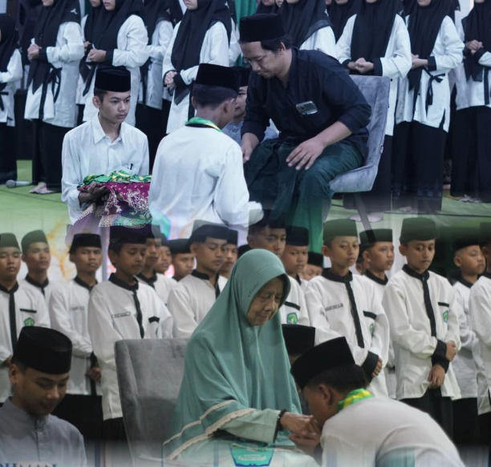

Selain program Madrasah Diniyah, Pondok Pesantren Ar-Rohman juga menyelenggarakan program menghafal Al-Qur'an (Tahfidz) yang terstruktur bagi santri yang ingin mendalami hafalan dengan mutqin (kuat dan melekat baik).
Program ini merupakan bentuk pengembangan serius dari Yayasan Ar-Rohman guna mencetak generasi penghafal Al-Qur'an yang mutqin, mandiri, serta berakhlakul karimah. Program penunjang ini resmi diluncurkan guna membawa berkah tersendiri bagi perkembangan kualitas bacaan dan hafalan para santri.
Proses bimbingan hafalan santri diatur secara intensif harian melalui 3 pilar metode utama untuk memastikan kualitas tajwid serta kekuatan hafalan:
Sesi krusial setoran hafalan baris-baris ayat baru setiap pagi dan sore hari secara langsung di depan ustadz/ustadzah pembimbing.
Pemantapan hafalan yang baru didapat dalam satu minggu terakhir agar melekat kuat di memori jangka pendek.
Agenda wajib pengulangan hafalan keseluruhan juz yang sudah dilewati agar hafalan tetap terjaga selamanya.
Guna memaksimalkan daya ingat tanpa mengganggu kegiatan sekolah formal, pembagian alokasi waktu aktivitas tahfidz dibagi menjadi waktu-waktu utama berikut:
Fokus kondisi pikiran yang optimal untuk menyetorkan baris atau ayat hafalan baru (Sabaq / Ziyadah) kepada pengampu.
Dimanfaatkan penuh setelah aktivitas madin/formal untuk mengulang kembali materi juz terdahulu secara mandiri maupun berpasangan (Muroja'ah).